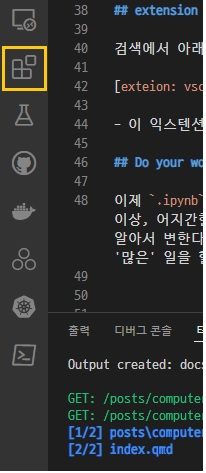

Python in the Browser
computer-tool
브라우저에서 python을 돌린다굽쇼?
Python이 갑자기 필요하다면?
이런 상황을 생각해보자.
- 파이썬을 갑자기 써야 한다!
- 그런데 조건상 클라이언트에 깔 상황이 안 된다!
이럴 때 쓸 수 있는 도구가 몇 개 있다. 대표적으로 아래 구글 코랩이 있다.
- 구글 드라이브와 연동되는 구글 코랩
그런데 많은 회사에서 구글 서비스를 막아두는 경우가 있다. 그렇다면 어떻게 할까?
Github.dev!
최근 깃헙에서 제공하는 온라인 vs code 서비스 github.dev을 활용해보자. vs code의 익스텐션을 깔면 파이썬을 위한 주피터 클라이언트를 활성화할 수 있다.
dev 모드 진입
github를 dev 모드로 돌린다. 웹 브라우저 리포지터리 창에서 . 버튼을 누르거나 .dev 주소로 접근하면 된다. 익숙한 vs code 화면에 보일 것이다.
이제 아래 왼쪽 탭 화면에서 extension을 찾으면 된다. 아래 그림처럼 생겼다.

extension 설치
검색에서 아래 익스텐션을 찾아서 설치해준다.
- 이 익스텐션은 주피터에서 브라우저 기반으로 파이썬을 돌리는 Pyodide를 구현한다.
Do your work!
이제 .ipynb 확장자 파일을 만들고 늘상 쓰듯이 jupyter를 쓰면 된다. 아주 특이하거나 무거운 환경이 아닌 이상, 어지간한 간단한 작업은 쾌적하게 수행할 수 있다. 익스텐션을 깔면, 인터페이스는 Jupyter에 적합하게 알아서 변한다. 물론 한계도 있다. 브라우저에 올라간 파이썬 엔진인 만큼 로컬이나 서버에 깔린 python처럼 ‘많은’ 일을 할 수는 없다.